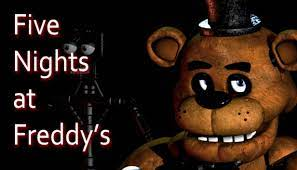

Five Nights at Freddy's v2
Five Nights at Freddy's es un popular juego de terror indie desarrollado por Scott Cawthon. El juego se desarrolla en una pizzería llamada Freddy Fazbear's Pizza, donde el jugador asume el papel de un guardia de seguridad que debe sobrevivir durante cinco noches mientras enfrenta a animatrónicos homicidas. El juego es conocido por su atmósfera aterradora y jugabilidad tensa.
